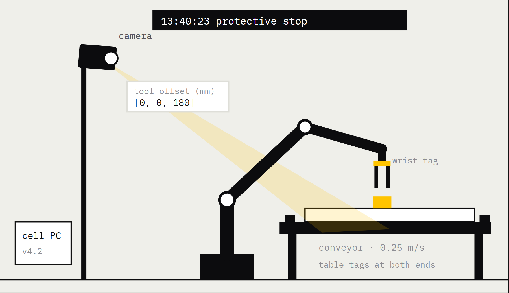
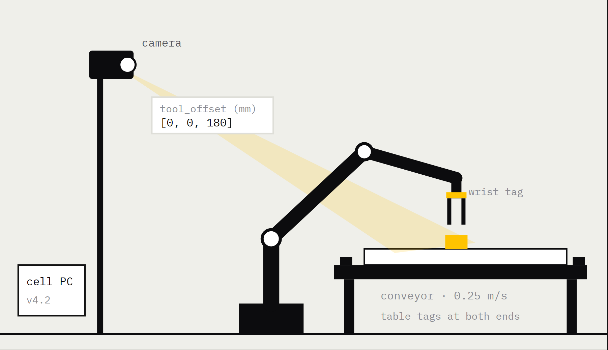
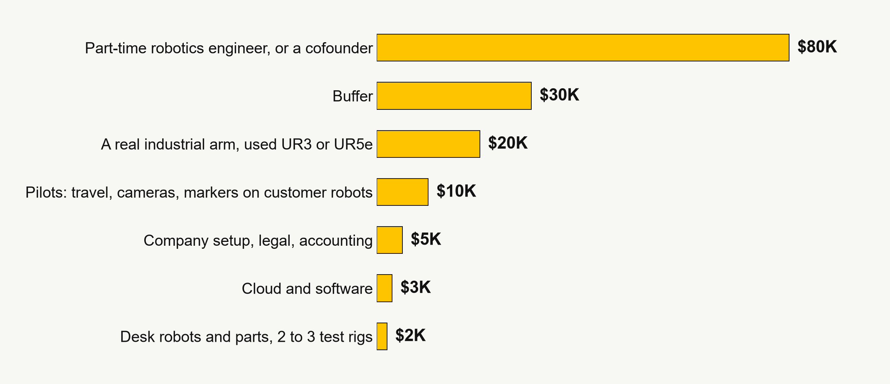

Kintrace finds what moved on a robot, fixes it, and tells you it is good to go.
Rithik Satarla rithiksatarla@gmail.com Previously LoopCell. Same product, new name.

camera moved 18.1 mm · fixed
GO
The tool's own output, from a run on our simulator.
Kintrace finds what moved on a robot, fixes it, and tells you it is good to go.
13:40:23
something changed
Notices
It sees the exact moment a robot got knocked out of place, from data the robot already records.
18.1 mm
the camera moved
Explains
It says what moved and by how much. Not an alert. A measurement.
6 / 6
test grabs, then GO
Fixes
It updates the robot, runs test grabs, and says whether the cell is good to go.
Software only. No new hardware. It works on robot arms that already have a camera.
At 1:40 a cart clips a camera. Nobody finds out until 2:10.

1:40
Running fine
The camera is where the calibration says it is.
1:40 to 2:10
Bumped, and nobody knows
Every grab is a centimetre off. The robot still reports healthy.
1:43 with Kintrace
Found, fixed, signed off
Camera moved 18.1 mm. New calibration written. Six test grabs.
An illustration, drawn from a run on our simulator. The 18.1 mm and the timings are printed by the tool. No cell like this exists yet.
You pay for it twice: in ruined training data, and in stopped lines.
Robot training data
An open audit of 4,959 recorded episodes flagged 15.6% of them for exclusion, and another half for review.
$2.3M
an hour
Up to, for an idle production line at a big car plant. Across the 500 largest manufacturers, unplanned downtime of every kind costs $1.4 trillion a year, about 11% of revenue.
Episode audit: an open source tool run over 12 public datasets, dev.to, 2026. Downtime: Siemens, The True Cost of Downtime 2024. Both linked in pitch/SOURCES.md.
Everything on the market tells you something is wrong, not what moved.
Monitoring dashboards
Ember, Foxglove, Formant
They watch the software and the logs. They will tell you a cell is slow or a run failed. They do not measure where the camera is, so they cannot name the physical cause.
Calibration hardware
Dynalog, CAPTRON, Renishaw
These do measure, and they are accurate. But you bolt a device into every cell you want covered, and each one mostly does the tool.
A technician
How it is actually done
Someone drives out and rules out each cause by hand, one at a time, with the cell down while they do it. It works. It costs hours.
We have not found anyone doing all of it from software alone: when it changed, what moved, by how much, and the fix written back.
What each of these does is taken from their own sites and materials. Listed in pitch/SOURCES.md.
This is the tool's own output, not a mockup.
1
Notices
Finds the moment things changed and lines it up with the protective stop the controller logged.
2
Explains
Names the cause and sizes it. Here: the camera, 18.1 mm, and nothing else moved.
3
Fixes
Writes the new calibration, re-checks, runs six test grabs, then signs GO or NO-GO.
A real run of the tool on our simulated cell. You can run it yourself in the browser demo.
In our simulator, Kintrace named the right cause every time. The dashboard baseline we wrote got 69%.
120 runs on our simulated UR5e pick cell, 20 per case, every fault sized to cause the same 20 mm miss. The baseline is ours, built from the signals a typical dashboard tracks. Never run on a real arm.
It also catches slow drift, about 55 seconds before the first grab misses.
One simulated run of a sagging camera mount. Across 20 drifts it warned before the first miss 19 times, named the cause right 20 times, and raised 0 false alarms in 230 healthy windows. Drift is sped up so a run takes minutes. We have not measured lead time at real-world drift rates.
There have never been more robots, and the money behind them doubled in three years.
5 million
industrial robots now operating, a record, up 9% in a year. The US installed 38,500 and passed Japan. IFR, September 2026.
47% a year
forecast growth for physical AI, from $0.89B in 2025 to $15.2B by 2032. Every robot in it learns from recordings.
IFR World Robotics 2026. MarketsandMarkets, physical AI. Venture figures from Robotics Center, State of Robotics 2026. Links in pitch/SOURCES.md.
At $200 a robot a month, the part we can realistically sell to is $1.2B a year.
Top down check: $22.5B was spent on industrial robot services in 2023, heading to $41.6B by 2033. Our $12B bottom up number sits inside a services market already twice its size.
Robot count: IFR World Robotics 2026. Services market: Market.us, October 2024. The 10% camera share is our own estimate; we looked for a public figure and did not find one.
Software that names the cause and fixes it is an empty box.
Finds and fixes the cause
Only shows a problem
Needs hardware
Software only
Dynalog, CAPTRON
Finds and fixes it, but you mount hardware in every cell.
Kintrace
Finds it, sizes it, writes the fix, certifies the cell. Software only.
Robot makers
Built-in mastering routines. One brand, run by a technician.
Ember, Foxglove, dataset checkers
Show you something is off. No geometry, no fix.
Where we are going.
Now
The engine works in simulation. A live demo anyone can try, and the code is open on GitHub.
3 months
Kintrace running on a real robot arm, a video of it catching and fixing a bump, and first conversations with robot teams.
6 months
Three paid pilots with robot learning teams and robot fleets, and real robot data plugged in through ROS 2 logs.
12 months
Always-on monitoring for fleets, then working with robot makers to ship it on new arms.
Where this goesEvery robot arm checked the way a car has a check engine light, with Kintrace as the standard way to know a robot is physically right.
Why back Kintrace now.
It is built, not an idea
A working engine, a live demo, open code and 32 tests passing. You can run the whole thing yourself before you decide.
A hard technical edge
It tells apart faults that look identical from outside, camera against joint against tool, and gives the exact fix. 120/120 against 83/120 for a dashboard baseline. That is research, not a feature someone adds in a week.
A big market with no software answer
5 million robots, 600,000 added a year, robot learning booming. Today you get a dashboard that only flags a problem, or hardware in every cell.
The founder
Physical AI research at CMU, Harvard Innovation Labs. I built all of this myself, from idea to working product in weeks.
The 120/120 and 83/120 are from our simulator, and we wrote the baseline. No customers, no pilots and no real-arm results yet. That is what this round is for.
$150K takes Kintrace from simulation to paying customers.

What it buys
3 months
Kintrace on a real robot arm, a demo video, first user conversations
6 months
Three paying pilots
12 months
Results from real customers, ready for a seed round
Rithik Satarla · Physical AI research at CMU. Harvard Innovation Labs. · rithiksatarla@gmail.com